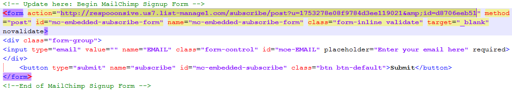

Created: 08/26/2013
By: Falconerie Badayos II
Email: falconerie.04@gmail.com
Thank you for purchasing my theme. If you have any questions that are beyond the scope of this help file, please feel free to email via my user page contact form here. Thanks so much!
This template is a fluid layout with one column. All of the information within the main content area is nested within a div with a class of "container". The general template structure is the same throughout the template. Please refer to Bootstrap for more details.
Change the logoTo change the logo, you need to find(CTRL+F) the word "logo". Replace it with an image or text.
Change the iconsI am using Font Awesome for the icons.
To change a certain icon.
This theme has 9 color options
- First edit index.html
- Go to the body tag
- Replace the class with your color of choice from the options above.
AnimationsIf you would like to add some animations to elements. Please see Animate.css by Daniel Eden for more details on how to apply these. I have supplied 5 animation durations classes.
.delayTwo {
-webkit-animation-duration: 2s;
-moz-animation-delay: 2s;
-o-animation-iteration-count: infinite;
}
Here are some other predefined animation classes durations:
You will add these together with the animation class for best example. I have chosen the class fadeInDown and I want the animtion duration for 2 seconds.
h1 class="fadeInDown delayTwo"
If you would like to edit the color, font, or style of any elements in one of these columns, you would do the following:
.row a {
color: #someColor;
}
If you find that your new style is not overriding, it is most likely because of a specificity problem. Scroll down in your CSS file and make sure that there isn't a similar style that has more weight.
#container #row a {
color: #someColor;
}
So, to ensure that your new styles are applied, make sure that they carry enough "weight" and that there isn't a style lower in the CSS file that is being applied after yours.
I'm using two CSS files in this theme. The first one is a Bootstrap file that includes normalize.css . This makes browsers render all elements more consistently and in line with modern standards. It precisely targets only the styles that need normalizing.
The second file contains all of the specific stylings for the page. The file is separated into sections using:
/*------------------------------- I. Defaul Selectors ---------------------------------*/ some code /*------------------------------- II. Countdown Timer ---------------------------------*/ some code /*------------------------------- III. Social Icons ---------------------------------*/ some code /*------------------------------- IV. Animations ---------------------------------*/ some code etc, etc.
If you would like to edit a specific section of the site, simply find the appropriate label in the CSS file, and then scroll down until you find the appropriate style that needs to be edited.
This theme imports four Javascript files.
$(document).ready(function(){
$("#countdown").countdown({
date: "29 august 2013 12:00:00", // Follow this format.
format: "on"
},
function() {
// callback function
});
});
This script can be found at the bottom of index.html
The template uses MailChimp to integrate a subscription form. Please see this tutorial from MailChimp. You need to customize the form and apply it in the html file.
action="http://respooonsive.us7.list-manage1.com/subscribe/post?u=1753278e08f9784d3ee119021&id=d8706eeb51"
You need to copy the action URL from MailChimp and replace the default.
I've used the following images, icons, scripts or other files as listed.
Once again, thank you so much for purchasing this theme. As I said at the beginning, I'd be glad to help you if you have any questions relating to this theme. No guarantees, but I'll do my best to assist. If you have a more general question relating to the themes on ThemeForest, you might consider visiting the forums and asking your question in the "Item Discussion" section.
Falconerie Badayos II